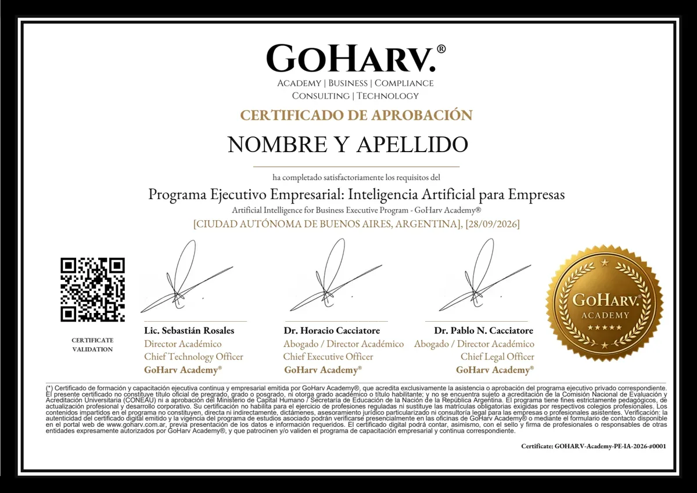

Programa Ejecutivo
Inteligencia Artificial para Empresas
Artificial Intelligence for Business
Programa Ejecutivo que congrega aspectos teóricos y prácticos sobre Inteligencia Artificial aplicada a las Empresas, destinado a comprender las ventajas que otorga esta herramienta en la readecuación, automatización de procesos operativos y comerciales, reducción de costos y optimización de recursos corporativos, lo cual permite analizar su impacto y delinear premisas de gobernanza, desarrollando así criterios para su utilización de manera ética y responsable dentro de las organizaciones.
Cuenta con un faculty de excelencia académica y profesional, contando además con el patrocinio de diversas entidades del ámbito académico, editorial y empresarial.
Temario en preparación.
Empresarios PYME, Directores de Empresa, Gerentes Comerciales, Responsables de Áreas de Cumplimiento Normativo (Compliance), profesionales de Recursos Humanos, Franquiciantes, profesionales vinculados con el uso y aplicación de Inteligencia Artificial en las empresas y profesionales de diversas ciencias —entre ellos Abogados y Contadores— interesados en introducirse en esta temática.
32 hs., programadas en 8 encuentros de 4 horas cada uno + 1 Congreso / Workshop optativo.
La modalidad es híbrida, compuesta por seis (6) encuentros virtuales sincrónicos de 4 hs. cada uno, y dos (2) webinars masterclass de 4 hs. cada uno, utilizando para ello plataformas digitales de videoconferencias que permiten conectar personas mediante audio, video y servicio de mensajería en línea, como ser: Google Meet, Microsoft Teams o Zoom, contando además con acceso complementario a actividades asincrónicas las 24 horas.
El Programa Ejecutivo comprende además la realización de un Congreso presencial, de carácter optativo, previsto para la finalización del ciclo, que incluye acto de cierre, workshop empresarial, free pass a contenido doctrinario, servicio de catering, cocktail y actividades networking.
No requiere conocimientos previos de programación. No se imparten conocimientos en lenguajes complejos. Orientado al desarrollo de pensamiento estratégico y algorítmico para la toma de decisiones en el uso de IA como herramienta de alto impacto cognitivo empresarial.
Empresarios/as, profesionales de cualquier ciencia o disciplina y personas con estudios de formación secundaria o terciaria y experiencia en el uso de herramientas tecnológicas e informáticas.
Cada módulo o unidad podrá contar con instancia de evaluación de los contenidos teóricos y prácticos impartidos de acuerdo al criterio definido por el responsable académico de cada unidad programática. Para la obtención del certificado se requiere haber cumplido con una asistencia mínima del 75% a las clases sincrónicas y aprobar las evaluaciones correspondientes que fueran previstas.
GoHarv Academy® otorgará certificado de programa (*) de formación empresarial y continua a quienes completen el programa y superen las evaluaciones previstas. El certificado será emitido en formato digital y será suscripto por el Director del Programa Ejecutivo de Formación Empresarial y Continua; y los Directores de GoHarv Academy®, siendo los mismos profesionales con título de grado. El certificado emitido podrá contar además con sello o logo de otras entidades partner que patrocinen y/o validen el programa de formación continua empresarial.

(*) Certificado de formación y capacitación ejecutiva continua y empresarial emitida por GoHarv Academy®, que acredita exclusivamente la asistencia o aprobación del programa ejecutivo privado correspondiente. El presente certificado no constituye título oficial de pregrado, grado o posgrado, ni otorga grado académico o título habilitante; y no se encuentra sujeto a acreditación de la Comisión Nacional de Evaluación y Acreditación Universitaria (CONEAU) ni a aprobación del Ministerio de Capital Humano / Secretaría de Educación de la Nación de la República Argentina. El programa tiene fines estrictamente pedagógicos, de actualización profesional y desarrollo corporativo. Su certificación no habilita para el ejercicio de profesiones reguladas ni sustituye las matrículas obligatorias exigidas por los respectivos colegios profesionales. Los contenidos impartidos en el programa no constituyen, directa ni indirectamente, dictámenes, asesoramiento jurídico particularizado ni consultoría legal para las empresas o profesionales asistentes. Verificación: la autenticidad del certificado digital emitido y la vigencia del programa de estudios asociado podrán verificarse presencialmente en las oficinas de GoHarv Academy® o mediante el formulario de contacto disponible en el portal web de www.goharv.com.ar, previa presentación de los datos e información requeridos. El certificado digital podrá contar, asimismo, con el sello y firma de profesionales o responsables de otras entidades expresamente autorizados por GoHarv Academy®, y que patrocinen y/o validen el programa de capacitación empresarial y continua correspondiente.
Un programa ejecutivo conectado con el ecosistema GoHarv.®
El Programa Ejecutivo en Inteligencia Artificial se interrelaciona con soluciones desarrolladas desde otras unidades del ecosistema, entre ellas:
- GoHarv Compliance® + GoHarv Consulting® Diseño e implementación de Programas de Compliance para empresas PYME, incorporando el uso y la gobernanza de IA Agéntica Empresarial
- GoHarv Technology® + GoHarv Consulting® Diseño y creación de Agentes de IA para empresas